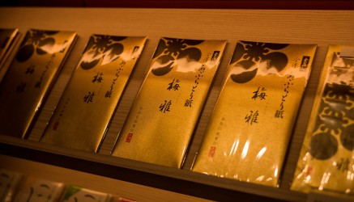

日本原点
北陆金泽自由行
（窄边距范例）
在日本北陆的中心有一片黄金的沼泽，这里是全日本98%的金箔产地，被人们盛赞为“充满文化、历史与自然之美的地方”，是世界10大最佳旅行目的地之一。
时至今日，大街小巷中仍留存着古老的匠人印记，九谷烧，加贺友禅，茶道，和菓子，漆器……等等。不过当人们说起金泽，兼六园，金泽21世纪美术馆，铃木大拙纪念馆以及玉泉院都是不可错过的美景。作为北陆地区的首府，这里也是海鲜和各种美食的聚集地，在近江市场走一走，一定是饿着肚子进去，挺着肚子出来的。
如今，随着北陆新干线的正式开通，这片曾经的北陆秘境终于对我们揭开了面纱。
亮点
这一条探访金泽的线路由游学日本6年并且专注吃喝玩乐的资深专家Zulu打造。
Zulu 说
比起京都和奈良，北陆金泽更让我觉得是日本的原点所在之处。并不过于发达的旅游业，使得很多原生态的东西更好地，以真正当地人生活于其中的方式呈现出来，十分真实。 我还记得第一次去金泽的时候，从温泉旅馆的窗户里看到日本海的风雪，旅馆的老阿姨告诉我，这个就叫做“吹雪”。
凛冽的自然和温暖的人情，应该就是日本的真实模样吧。